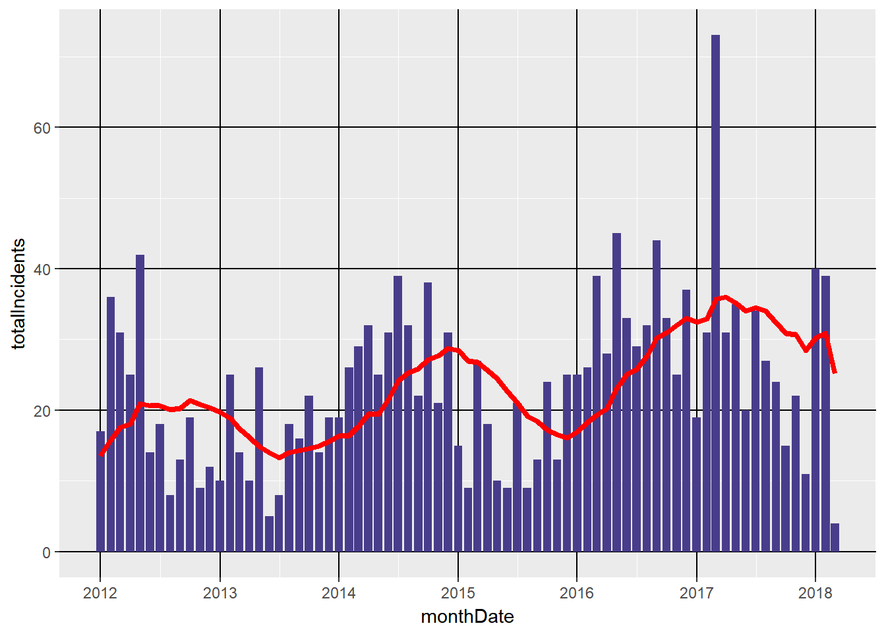
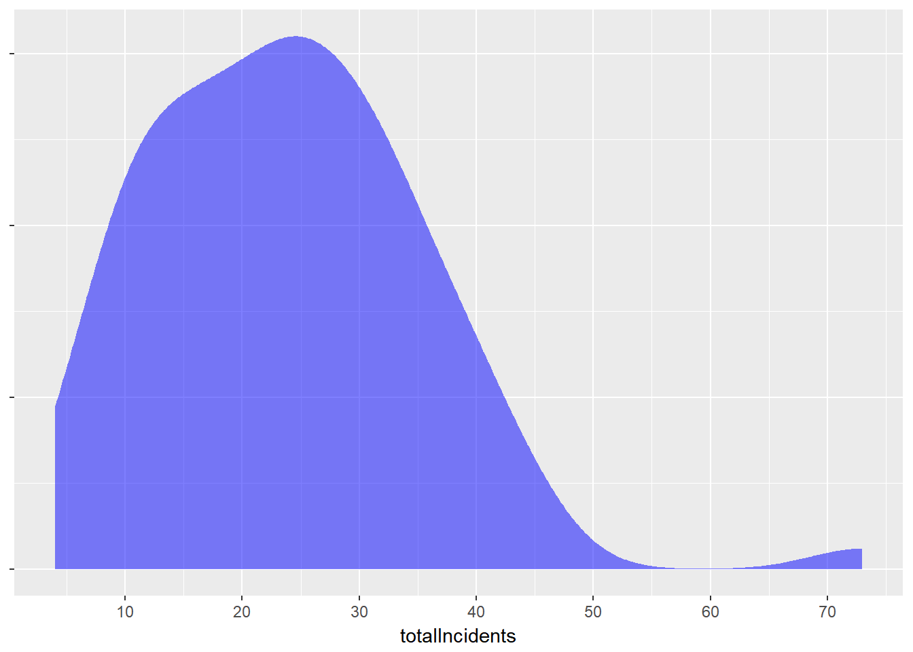
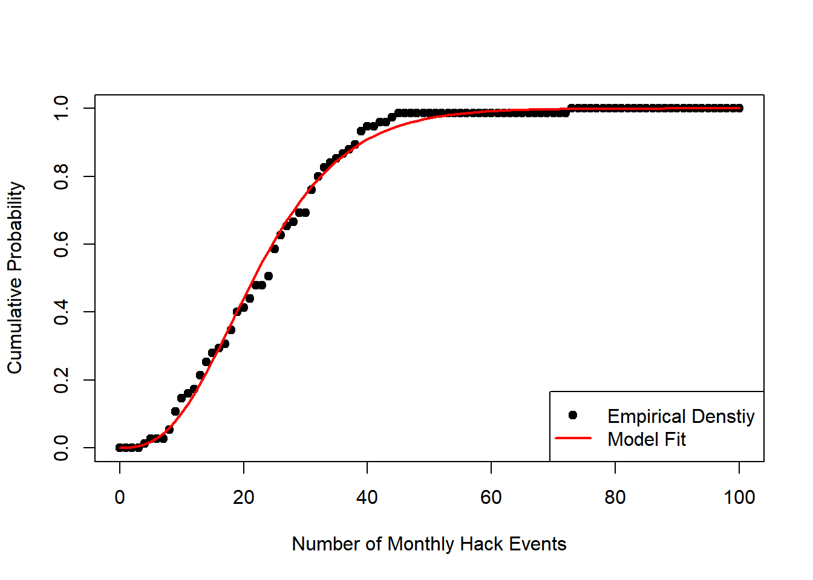

## threshold probability
## 1 0 28.0%
## 2 15 22.7%
## 3 24 32.0%
## 4 33 16.0%
## 5 45 1.3%
## 6 73 0.0%Results suggest a negative binomial might be a better fit:
## [1] "Mean of counts: 23.8666666666667"## [1] "Standard Deviation of counts: 11.7362148386411"## [1] "Negative Binomial AIC: 576.01712182246"## [1] "Poisson AIC: 788.547932301929"
## # A tibble: 6 x 3
## `Threshold (Lower Bound)` `Historical Probability` `Model Probability`
## <dbl> <fctr> <chr>
## 1 0 28.0% 25.8%
## 2 15 22.7% 32.3%
## 3 24 32.0% 23.0%
## 4 33 16.0% 13.7%
## 5 45 1.3% 5.0%
## 6 73 0.0% 0.1%